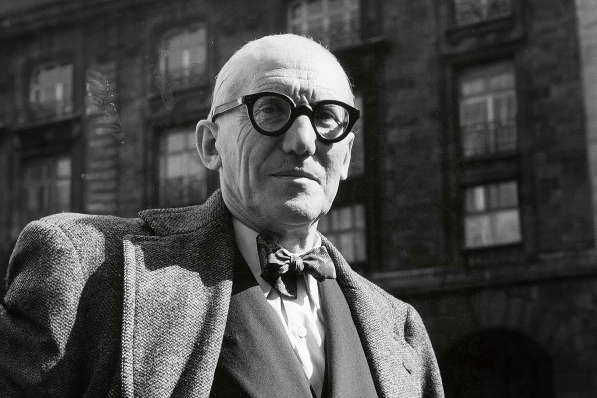

Le Corbusier, born Charles-Édouard Jeanneret-Gris, was a pioneering Swiss-French architect whose work revolutionized modern architecture through his emphasis on functionality, simplicity, and the use of modern materials like concrete, steel, and glass. He advocated for designs that prioritized human needs and the efficiency of urban spaces, challenging traditional architectural styles. Notable for his involvement in the International Style, Le Corbusier's most iconic works, such as Villa Savoye and the Unite d'Habitation, reflect his vision of open floor plans, communal living, and integration with nature, reshaping the way cities and homes were designed in the 20th century.
